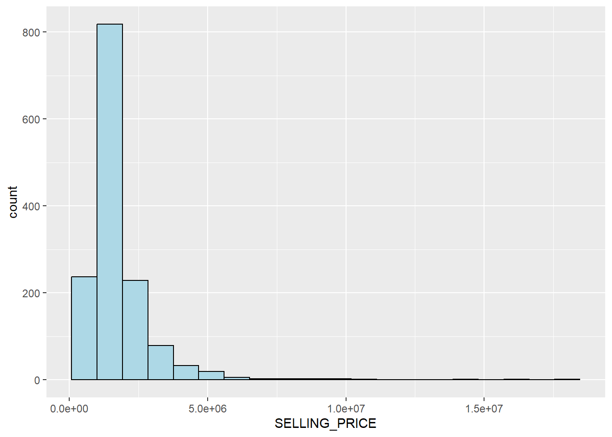
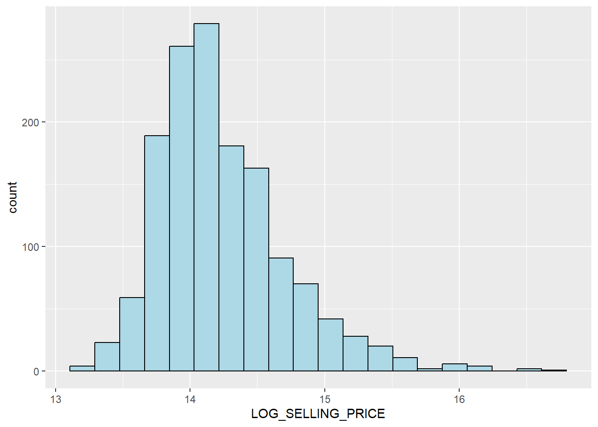
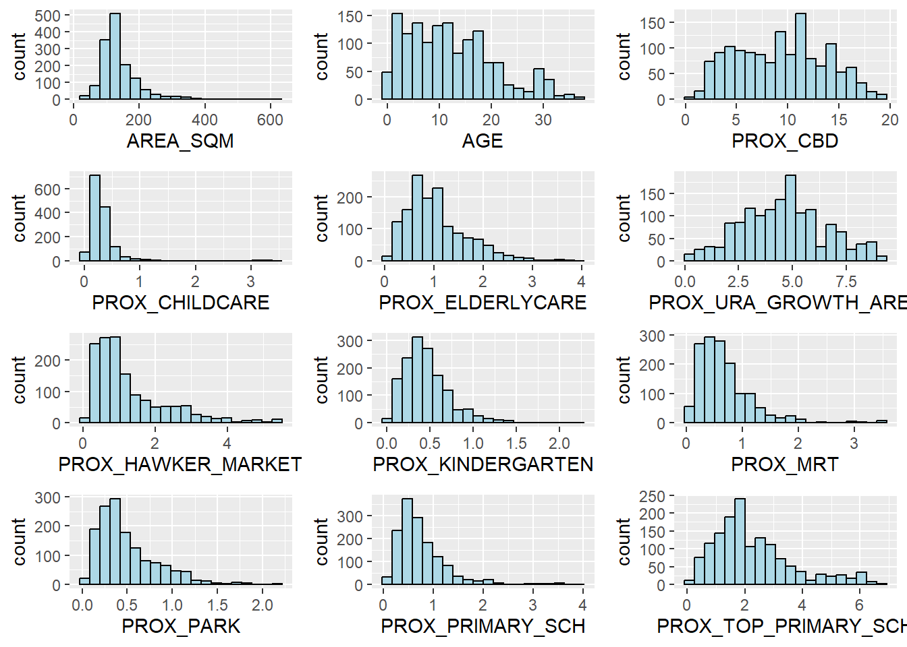
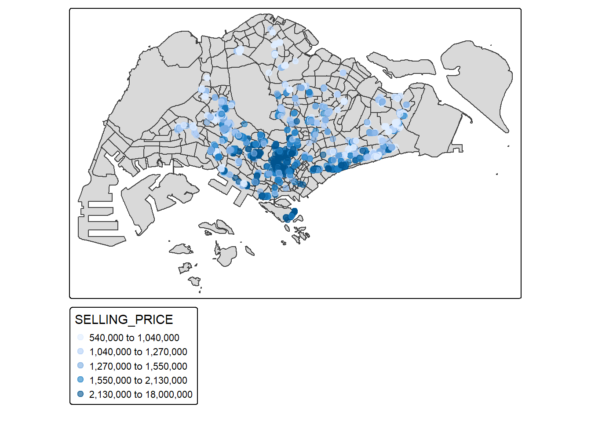
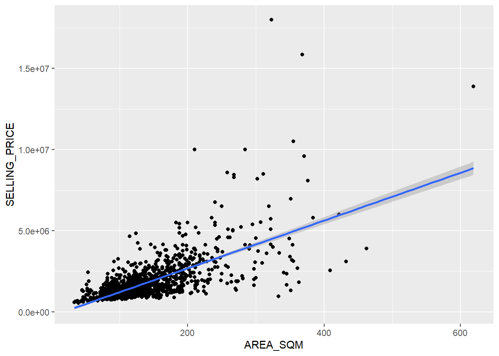
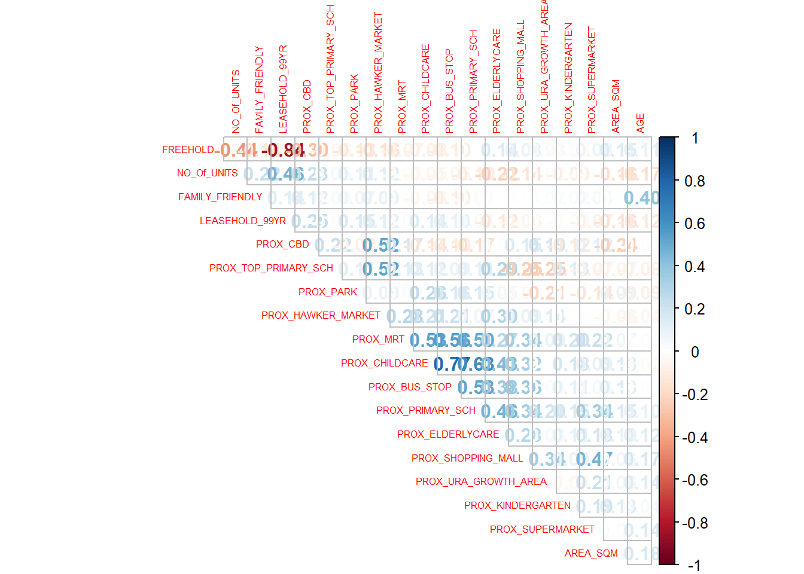
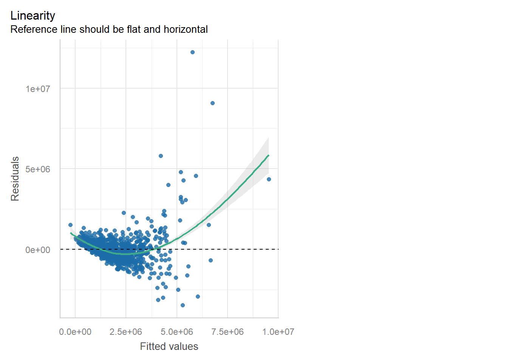
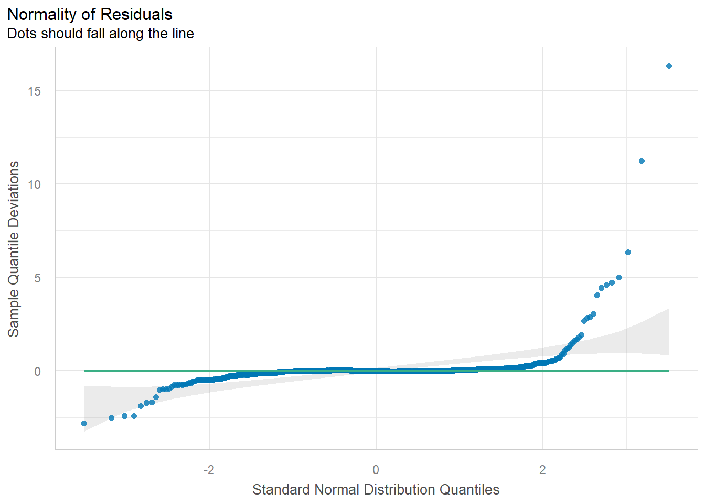

pacman::p_load(olsrr, corrplot, ggpubr,
sf, sfdep, GWmodel, tmap,
tidyverse, gtsummary,
performance, RColorBrewer)Hands-on Exercise 7: Calibrating Hedonic Pricing Model for Private Highrise Property with GWR Method
1 Overview
Geographically weighted regression (GWR) is a spatial statistical technique that takes non-stationary variables into consideration (e.g., climate; demographic factors; physical environment characteristics) and models the local relationships between these independent variables and an outcome of interest (also known as dependent variable). In this hands-on exercise, you will learn how to build hedonic pricing models by using GWR methods. The dependent variable is the resale prices of condominium in 2015. The independent variables are divided into either structural and locational.
2 The Data
Two data sets will be used in this model building exercise, they are:
URA Master Plan subzone boundary in shapefile format (i.e. MP14_SUBZONE_WEB_PL)
condo_resale_2015 in csv format (i.e. condo_resale_2015.csv)
3 Getting Started
Before we get started, it is important for us to install the necessary R packages into R and launch these R packages into R environment.
The R packages needed for this exercise are as follows:
R package for building OLS and performing diagnostics tests
R package for calibrating geographical weighted family of models
R package for multivariate data visualisation and analysis
Spatial data handling
- sf
Attribute data handling
- tidyverse, especially readr, ggplot2 and dplyr
Choropleth mapping
- tmap
The code chunks below installs and launches these R packages into R environment.
4 Geospatial Data Wrangling
Importing geospatial data
The geospatial data used in this hands-on exercise is called MP14_SUBZONE_WEB_PL. It is in ESRI shapefile format. The shapefile consists of URA Master Plan 2014’s planning subzone boundaries. Polygon features are used to represent these geographic boundaries. The GIS data is in svy21 projected coordinates systems.
The code chunk below is used to import MP_SUBZONE_WEB_PL shapefile by using st_read() of sf packages.
mpsz = st_read(dsn = "data/geospatial",
layer = "MP14_SUBZONE_WEB_PL")Reading layer `MP14_SUBZONE_WEB_PL' from data source
`C:\sonphamsmu\isss626-aug2526\Hands-on_Ex\Hands-on_ex07\data\geospatial'
using driver `ESRI Shapefile'
Simple feature collection with 323 features and 15 fields
Geometry type: MULTIPOLYGON
Dimension: XY
Bounding box: xmin: 2667.538 ymin: 15748.72 xmax: 56396.44 ymax: 50256.33
Projected CRS: SVY21The report above shows that the R object used to contain the imported MP14_SUBZONE_WEB_PL shapefile is called mpsz and it is a simple feature object. The geometry type is multipolygon. it is also important to note that mpsz simple feature object does not have EPSG information.
Updating CRS information
The code chunk below updates the newly imported mpsz with the correct ESPG code (i.e. 3414)
mpsz_svy21 <- st_transform(mpsz, 3414)5 Aspatial Data Wrangling
Importing the aspatial data
The condo_resale_2015 is in csv file format. The codes chunk below uses read_csv() function of readr package to import condo_resale_2015 into R as a tibble data frame called condo_resale.
condo_resale = read_csv("data/aspatial/Condo_resale_2015.csv")Converting aspatial data frame into a sf object
Currently, the condo_resale tibble data frame is aspatial. We will convert it to a sf object. The code chunk below converts condo_resale data frame into a simple feature data frame by using st_as_sf() of sf packages.
condo_resale.sf <- st_as_sf(condo_resale,
coords = c("LONGITUDE", "LATITUDE"),
crs=4326) %>%
st_transform(crs=3414)head(condo_resale.sf)Simple feature collection with 6 features and 21 fields
Geometry type: POINT
Dimension: XY
Bounding box: xmin: 22085.12 ymin: 29951.54 xmax: 41042.56 ymax: 34546.2
Projected CRS: SVY21 / Singapore TM
# A tibble: 6 × 22
POSTCODE SELLING_PRICE AREA_SQM AGE PROX_CBD PROX_CHILDCARE PROX_ELDERLYCARE
<dbl> <dbl> <dbl> <dbl> <dbl> <dbl> <dbl>
1 118635 3000000 309 30 7.94 0.166 2.52
2 288420 3880000 290 32 6.61 0.280 1.93
3 267833 3325000 248 33 6.90 0.429 0.502
4 258380 4250000 127 7 4.04 0.395 1.99
5 467169 1400000 145 28 11.8 0.119 1.12
6 466472 1320000 139 22 10.3 0.125 0.789
# ℹ 15 more variables: PROX_URA_GROWTH_AREA <dbl>, PROX_HAWKER_MARKET <dbl>,
# PROX_KINDERGARTEN <dbl>, PROX_MRT <dbl>, PROX_PARK <dbl>,
# PROX_PRIMARY_SCH <dbl>, PROX_TOP_PRIMARY_SCH <dbl>,
# PROX_SHOPPING_MALL <dbl>, PROX_SUPERMARKET <dbl>, PROX_BUS_STOP <dbl>,
# NO_Of_UNITS <dbl>, FAMILY_FRIENDLY <dbl>, FREEHOLD <dbl>,
# LEASEHOLD_99YR <dbl>, geometry <POINT [m]>6 Exploratory Data Analysis (EDA)
6.1 EDA using statistical graphics
We can plot the distribution of SELLING_PRICE by using appropriate Exploratory Data Analysis (EDA) as shown in the code chunk below.
ggplot(data=condo_resale.sf,
aes(x=`SELLING_PRICE`)) +
geom_histogram(bins=20,
color="black",
fill="light blue")
The figure above reveals a right skewed distribution. This means that more condominium units were transacted at relative lower prices.
Statistically, the skewed dsitribution can be normalised by using log transformation. The code chunk below is used to derive a new variable called LOG_SELLING_PRICE by using a log transformation on the variable SELLING_PRICE. It is performed using mutate() of dplyr package.
condo_resale.sf <- condo_resale.sf %>%
mutate(`LOG_SELLING_PRICE` = log(SELLING_PRICE))Now, you can plot the LOG_SELLING_PRICE using the code chunk below.
ggplot(data=condo_resale.sf,
aes(x=`LOG_SELLING_PRICE`)) +
geom_histogram(bins=20,
color="black",
fill="light blue")
Notice that the distribution is relatively less skewed after the transformation.
6.2 Multiple Histogram Plots distribution of variables
In this section, you will learn how to draw a small multiple histograms (also known as trellis plot) by using ggarrange() of ggpubr package.
The code chunk below is used to create 12 histograms. Then, ggarrange() is used to organised these histogram into a 3 columns by 4 rows small multiple plot.
AREA_SQM <- ggplot(data=condo_resale.sf,
aes(x= `AREA_SQM`)) +
geom_histogram(bins=20,
color="black",
fill="light blue")
AGE <- ggplot(data=condo_resale.sf,
aes(x= `AGE`)) +
geom_histogram(bins=20,
color="black",
fill="light blue")
PROX_CBD <- ggplot(data=condo_resale.sf,
aes(x= `PROX_CBD`)) +
geom_histogram(bins=20,
color="black",
fill="light blue")
PROX_CHILDCARE <- ggplot(data=condo_resale.sf,
aes(x= `PROX_CHILDCARE`)) +
geom_histogram(bins=20,
color="black",
fill="light blue")
PROX_ELDERLYCARE <- ggplot(data=condo_resale.sf,
aes(x= `PROX_ELDERLYCARE`)) +
geom_histogram(bins=20,
color="black",
fill="light blue")
PROX_URA_GROWTH_AREA <- ggplot(data=condo_resale.sf,
aes(x= `PROX_URA_GROWTH_AREA`)) +
geom_histogram(bins=20,
color="black",
fill="light blue")
PROX_HAWKER_MARKET <- ggplot(data=condo_resale.sf,
aes(x= `PROX_HAWKER_MARKET`)) +
geom_histogram(bins=20,
color="black",
fill="light blue")
PROX_KINDERGARTEN <- ggplot(data=condo_resale.sf,
aes(x= `PROX_KINDERGARTEN`)) +
geom_histogram(bins=20,
color="black",
fill="light blue")
PROX_MRT <- ggplot(data=condo_resale.sf,
aes(x= `PROX_MRT`)) +
geom_histogram(bins=20,
color="black",
fill="light blue")
PROX_PARK <- ggplot(data=condo_resale.sf,
aes(x= `PROX_PARK`)) +
geom_histogram(bins=20,
color="black",
fill="light blue")
PROX_PRIMARY_SCH <- ggplot(data=condo_resale.sf,
aes(x= `PROX_PRIMARY_SCH`)) +
geom_histogram(bins=20,
color="black",
fill="light blue")
PROX_TOP_PRIMARY_SCH <- ggplot(data=condo_resale.sf,
aes(x= `PROX_TOP_PRIMARY_SCH`)) +
geom_histogram(bins=20,
color="black",
fill="light blue")
ggarrange(AREA_SQM, AGE, PROX_CBD, PROX_CHILDCARE,
PROX_ELDERLYCARE, PROX_URA_GROWTH_AREA,
PROX_HAWKER_MARKET, PROX_KINDERGARTEN, PROX_MRT,
PROX_PARK, PROX_PRIMARY_SCH, PROX_TOP_PRIMARY_SCH,
ncol = 3, nrow = 4)
6.3 Drawing Statistical Point Map
Lastly, we want to reveal the geospatial distribution condominium resale prices in Singapore. The map will be prepared by using tmap package.
tmap_mode("plot")
tm_shape(mpsz_svy21)+
tm_polygons() +
tm_shape(condo_resale.sf) +
tm_dots(fill = "SELLING_PRICE",
fill_alpha = 0.6,
size = 0.5,
fill.scale = tm_scale_intervals(
style="quantile")) +
tm_view(set_zoom_limits = c(11,14))
7 Hedonic Pricing Modelling in R
In this section, you will learn how to building hedonic pricing models for condominium resale units using lm() of R base.
7.1 Simple Linear Regression Method
First, we will build a simple linear regression model by using SELLING_PRICE as the dependent variable and AREA_SQM as the independent variable.
condo.slr <- lm(formula=SELLING_PRICE ~ AREA_SQM,
data = condo_resale.sf)lm() returns an object of class “lm” or for multiple responses of class c(“mlm”, “lm”).
The functions summary() and anova() can be used to obtain and print a summary and analysis of variance table of the results. The generic accessor functions coefficients, effects, fitted.values and residuals extract various useful features of the value returned by lm.
summary(condo.slr)
Call:
lm(formula = SELLING_PRICE ~ AREA_SQM, data = condo_resale.sf)
Residuals:
Min 1Q Median 3Q Max
-3695815 -391764 -87517 258900 13503875
Coefficients:
Estimate Std. Error t value Pr(>|t|)
(Intercept) -258121.1 63517.2 -4.064 5.09e-05 ***
AREA_SQM 14719.0 428.1 34.381 < 2e-16 ***
---
Signif. codes: 0 '***' 0.001 '**' 0.01 '*' 0.05 '.' 0.1 ' ' 1
Residual standard error: 942700 on 1434 degrees of freedom
Multiple R-squared: 0.4518, Adjusted R-squared: 0.4515
F-statistic: 1182 on 1 and 1434 DF, p-value: < 2.2e-16The output report reveals that the SELLING_PRICE can be explained by using the formula:
*y = -258121.1 + 14719x1*The R-squared of 0.4518 reveals that the simple regression model built is able to explain about 45% of the resale prices.
Since p-value is much smaller than 0.0001, we will reject the null hypothesis that mean is a good estimator of SELLING_PRICE. This will allow us to infer that simple linear regression model above is a good estimator of SELLING_PRICE.
The Coefficients: section of the report reveals that the p-values of both the estimates of the Intercept and ARA_SQM are smaller than 0.001. In view of this, the null hypothesis of the B0 and B1 are equal to 0 will be rejected. As a results, we will be able to infer that the B0 and B1 are good parameter estimates.
To visualise the best fit curve on a scatterplot, we can incorporate lm() as a method function in ggplot’s geometry as shown in the code chunk below.
ggplot(data=condo_resale.sf,
aes(x=`AREA_SQM`, y=`SELLING_PRICE`)) +
geom_point() +
geom_smooth(method = lm)
Figure above reveals that there are a few statistical outliers with relatively high selling prices.
7.2 Multiple Linear Regression Method
Visualising the relationships of the independent variables
Before building a multiple regression model, it is important to ensure that the indepdent variables used are not highly correlated to each other. If these highly correlated independent variables are used in building a regression model by mistake, the quality of the model will be compromised. This phenomenon is known as multicollinearity in statistics.
Correlation matrix is commonly used to visualise the relationships between the independent variables. Beside the pairs() of R, there are many packages support the display of a correlation matrix. In this section, the corrplot package will be used.
The code chunk below is used to plot a scatterplot matrix of the relationship between the independent variables in condo_resale data.frame.
corrplot(cor(condo_resale[, 5:23]),
diag = FALSE,
order = "AOE",
tl.pos = "td",
tl.cex = 0.5,
method = "number",
type = "upper")
Matrix reorder is very important for mining the hiden structure and patter in the matrix. There are four methods in corrplot (parameter order), named “AOE”, “FPC”, “hclust”, “alphabet”. In the code chunk above, AOE order is used. It orders the variables by using the angular order of the eigenvectors method suggested by Michael Friendly.
From the scatterplot matrix, it is clear that Freehold is highly correlated to LEASE_99YEAR. In view of this, it is wiser to only include either one of them in the subsequent model building. As a result, LEASE_99YEAR is excluded in the subsequent model building.
7.3 Building a hedonic pricing model using multiple linear regression method
The code chunk below using lm() to calibrate the multiple linear regression model.
condo.mlr <- lm(
formula = SELLING_PRICE ~ AREA_SQM + AGE +
PROX_CBD + PROX_CHILDCARE + PROX_ELDERLYCARE +
PROX_URA_GROWTH_AREA + PROX_HAWKER_MARKET +
PROX_KINDERGARTEN + PROX_MRT + PROX_PARK +
PROX_PRIMARY_SCH + PROX_TOP_PRIMARY_SCH +
PROX_SHOPPING_MALL + PROX_SUPERMARKET +
PROX_BUS_STOP + NO_Of_UNITS +
FAMILY_FRIENDLY + FREEHOLD,
data=condo_resale.sf)
summary(condo.mlr)
Call:
lm(formula = SELLING_PRICE ~ AREA_SQM + AGE + PROX_CBD + PROX_CHILDCARE +
PROX_ELDERLYCARE + PROX_URA_GROWTH_AREA + PROX_HAWKER_MARKET +
PROX_KINDERGARTEN + PROX_MRT + PROX_PARK + PROX_PRIMARY_SCH +
PROX_TOP_PRIMARY_SCH + PROX_SHOPPING_MALL + PROX_SUPERMARKET +
PROX_BUS_STOP + NO_Of_UNITS + FAMILY_FRIENDLY + FREEHOLD,
data = condo_resale.sf)
Residuals:
Min 1Q Median 3Q Max
-3475964 -293923 -23069 241043 12260381
Coefficients:
Estimate Std. Error t value Pr(>|t|)
(Intercept) 481728.40 121441.01 3.967 7.65e-05 ***
AREA_SQM 12708.32 369.59 34.385 < 2e-16 ***
AGE -24440.82 2763.16 -8.845 < 2e-16 ***
PROX_CBD -78669.78 6768.97 -11.622 < 2e-16 ***
PROX_CHILDCARE -351617.91 109467.25 -3.212 0.00135 **
PROX_ELDERLYCARE 171029.42 42110.51 4.061 5.14e-05 ***
PROX_URA_GROWTH_AREA 38474.53 12523.57 3.072 0.00217 **
PROX_HAWKER_MARKET 23746.10 29299.76 0.810 0.41782
PROX_KINDERGARTEN 147468.99 82668.87 1.784 0.07466 .
PROX_MRT -314599.68 57947.44 -5.429 6.66e-08 ***
PROX_PARK 563280.50 66551.68 8.464 < 2e-16 ***
PROX_PRIMARY_SCH 180186.08 65237.95 2.762 0.00582 **
PROX_TOP_PRIMARY_SCH 2280.04 20410.43 0.112 0.91107
PROX_SHOPPING_MALL -206604.06 42840.60 -4.823 1.57e-06 ***
PROX_SUPERMARKET -44991.80 77082.64 -0.584 0.55953
PROX_BUS_STOP 683121.35 138353.28 4.938 8.85e-07 ***
NO_Of_UNITS -231.18 89.03 -2.597 0.00951 **
FAMILY_FRIENDLY 140340.77 47020.55 2.985 0.00289 **
FREEHOLD 359913.01 49220.22 7.312 4.38e-13 ***
---
Signif. codes: 0 '***' 0.001 '**' 0.01 '*' 0.05 '.' 0.1 ' ' 1
Residual standard error: 755800 on 1417 degrees of freedom
Multiple R-squared: 0.6518, Adjusted R-squared: 0.6474
F-statistic: 147.4 on 18 and 1417 DF, p-value: < 2.2e-16
Note
The code chunk above consists of two parts: - lm() of Base R is used to calibrate a multiple linear regression model. The model output is stored in an lm object called condo.mlr. - summary() is used to print the model output.
7.4 Revising the model
With reference to the report above, it is clear that not all the independent variables are statistically significant. We will revised the model by removing those variables which are not statistically significant.
Now, we are ready to calibrate the revised model by using the code chunk below.
condo.mlr1 <- lm(
formula = SELLING_PRICE ~ AREA_SQM + AGE +
PROX_CBD + PROX_CHILDCARE + PROX_MRT +
PROX_ELDERLYCARE + PROX_URA_GROWTH_AREA +
PROX_PARK + PROX_PRIMARY_SCH +
PROX_SHOPPING_MALL + PROX_BUS_STOP +
NO_Of_UNITS + FAMILY_FRIENDLY + FREEHOLD,
data=condo_resale.sf)
summary(condo.mlr1)
Call:
lm(formula = SELLING_PRICE ~ AREA_SQM + AGE + PROX_CBD + PROX_CHILDCARE +
PROX_MRT + PROX_ELDERLYCARE + PROX_URA_GROWTH_AREA + PROX_PARK +
PROX_PRIMARY_SCH + PROX_SHOPPING_MALL + PROX_BUS_STOP + NO_Of_UNITS +
FAMILY_FRIENDLY + FREEHOLD, data = condo_resale.sf)
Residuals:
Min 1Q Median 3Q Max
-3470778 -298119 -23481 248917 12234210
Coefficients:
Estimate Std. Error t value Pr(>|t|)
(Intercept) 527633.22 108183.22 4.877 1.20e-06 ***
AREA_SQM 12777.52 367.48 34.771 < 2e-16 ***
AGE -24687.74 2754.84 -8.962 < 2e-16 ***
PROX_CBD -77131.32 5763.12 -13.384 < 2e-16 ***
PROX_CHILDCARE -318472.75 107959.51 -2.950 0.003231 **
PROX_MRT -294745.11 56916.37 -5.179 2.56e-07 ***
PROX_ELDERLYCARE 185575.62 39901.86 4.651 3.61e-06 ***
PROX_URA_GROWTH_AREA 39163.25 11754.83 3.332 0.000885 ***
PROX_PARK 570504.81 65507.03 8.709 < 2e-16 ***
PROX_PRIMARY_SCH 159856.14 60234.60 2.654 0.008046 **
PROX_SHOPPING_MALL -220947.25 36561.83 -6.043 1.93e-09 ***
PROX_BUS_STOP 682482.22 134513.24 5.074 4.42e-07 ***
NO_Of_UNITS -245.48 87.95 -2.791 0.005321 **
FAMILY_FRIENDLY 146307.58 46893.02 3.120 0.001845 **
FREEHOLD 350599.81 48506.48 7.228 7.98e-13 ***
---
Signif. codes: 0 '***' 0.001 '**' 0.01 '*' 0.05 '.' 0.1 ' ' 1
Residual standard error: 756000 on 1421 degrees of freedom
Multiple R-squared: 0.6507, Adjusted R-squared: 0.6472
F-statistic: 189.1 on 14 and 1421 DF, p-value: < 2.2e-16The output above reveals that all explanatory variables are statistically significant at 95% confident level.
7.5 Preparing Publication Quality Table: gtsummary method
The gtsummary package provides an elegant and flexible way to create publication-ready summary tables in R.
In the code chunk below, tbl_regression() is used to create a well formatted regression report.
tbl_regression(condo.mlr1, intercept = TRUE)| Characteristic | Beta | 95% CI | p-value |
|---|---|---|---|
| (Intercept) | 527,633 | 315,417, 739,849 | <0.001 |
| AREA_SQM | 12,778 | 12,057, 13,498 | <0.001 |
| AGE | -24,688 | -30,092, -19,284 | <0.001 |
| PROX_CBD | -77,131 | -88,436, -65,826 | <0.001 |
| PROX_CHILDCARE | -318,473 | -530,250, -106,696 | 0.003 |
| PROX_MRT | -294,745 | -406,394, -183,096 | <0.001 |
| PROX_ELDERLYCARE | 185,576 | 107,303, 263,849 | <0.001 |
| PROX_URA_GROWTH_AREA | 39,163 | 16,105, 62,222 | <0.001 |
| PROX_PARK | 570,505 | 442,004, 699,006 | <0.001 |
| PROX_PRIMARY_SCH | 159,856 | 41,698, 278,014 | 0.008 |
| PROX_SHOPPING_MALL | -220,947 | -292,668, -149,226 | <0.001 |
| PROX_BUS_STOP | 682,482 | 418,616, 946,348 | <0.001 |
| NO_Of_UNITS | -245 | -418, -73 | 0.005 |
| FAMILY_FRIENDLY | 146,308 | 54,321, 238,295 | 0.002 |
| FREEHOLD | 350,600 | 255,448, 445,752 | <0.001 |
| Abbreviation: CI = Confidence Interval | |||
With gtsummary package, model statistics can be included in the report by either appending them to the report table by using add_glance_table() or adding as a table source note by using add_glance_source_note() as shown in the code chunk below.
tbl_regression(condo.mlr1,
intercept = TRUE) %>%
add_glance_source_note(
label = list(sigma ~ "\U03C3"),
include = c(r.squared, adj.r.squared,
AIC, statistic,
p.value, sigma))| Characteristic | Beta | 95% CI | p-value |
|---|---|---|---|
| (Intercept) | 527,633 | 315,417, 739,849 | <0.001 |
| AREA_SQM | 12,778 | 12,057, 13,498 | <0.001 |
| AGE | -24,688 | -30,092, -19,284 | <0.001 |
| PROX_CBD | -77,131 | -88,436, -65,826 | <0.001 |
| PROX_CHILDCARE | -318,473 | -530,250, -106,696 | 0.003 |
| PROX_MRT | -294,745 | -406,394, -183,096 | <0.001 |
| PROX_ELDERLYCARE | 185,576 | 107,303, 263,849 | <0.001 |
| PROX_URA_GROWTH_AREA | 39,163 | 16,105, 62,222 | <0.001 |
| PROX_PARK | 570,505 | 442,004, 699,006 | <0.001 |
| PROX_PRIMARY_SCH | 159,856 | 41,698, 278,014 | 0.008 |
| PROX_SHOPPING_MALL | -220,947 | -292,668, -149,226 | <0.001 |
| PROX_BUS_STOP | 682,482 | 418,616, 946,348 | <0.001 |
| NO_Of_UNITS | -245 | -418, -73 | 0.005 |
| FAMILY_FRIENDLY | 146,308 | 54,321, 238,295 | 0.002 |
| FREEHOLD | 350,600 | 255,448, 445,752 | <0.001 |
| Abbreviation: CI = Confidence Interval | |||
| R² = 0.651; Adjusted R² = 0.647; AIC = 42,967; Statistic = 189; p-value = <0.001; σ = 755,957 | |||
7.6 Regression Diagnostics
Regression diagnostics are a set of procedures used to check if a regression model’s assumptions are met and how well the model fits the data. These diagnostics involve checking for issues like non-linear relationships, non-normal errors, non-constant variance, and influential observations to ensure the model’s conclusions are valid and reliable. Common methods include graphical analysis, like residual plots and QQ-plots, and quantitative tests
In this section, we would like to introduce you a fantastic R package specially programmed for performing OLS regression diagnostics. It is called olsrr. It provides a collection of very useful methods for building better multiple linear regression models:
comprehensive regression output
residual diagnostics
measures of influence
heteroskedasticity tests
collinearity diagnostics
model fit assessment
variable contribution assessment
variable selection procedures
Multicollinearity test
Multicollinearity occurs when independent variables are not truly independent, meaning a change in one is associated with a change in another. This makes it hard for the model to isolate each variable’s influence on the outcome.
Performing a multicollinearity test is crucial in multiple linear regression because it ensures the reliability and interpretability of the model’s results. High multicollinearity, where independent variables are highly correlated, inflates the variance of the estimated coefficients, making them unstable, unreliable, and difficult to interpret. This instability can lead to misleading statistical conclusions, such as a variable appearing statistically insignificant when it is not.
In the code chunk below, the check_collinearity() of performance package is used to test if there are sign of multicollinearity.
check_collinearity(condo.mlr1)# Check for Multicollinearity
Low Correlation
Term VIF VIF 95% CI adj. VIF Tolerance Tolerance 95% CI
AREA_SQM 1.15 [1.09, 1.23] 1.07 0.87 [0.81, 0.92]
AGE 1.41 [1.33, 1.52] 1.19 0.71 [0.66, 0.75]
PROX_CBD 1.57 [1.47, 1.69] 1.25 0.64 [0.59, 0.68]
PROX_CHILDCARE 3.26 [3.00, 3.56] 1.81 0.31 [0.28, 0.33]
PROX_MRT 1.91 [1.78, 2.07] 1.38 0.52 [0.48, 0.56]
PROX_ELDERLYCARE 1.52 [1.42, 1.63] 1.23 0.66 [0.61, 0.70]
PROX_URA_GROWTH_AREA 1.33 [1.26, 1.43] 1.15 0.75 [0.70, 0.80]
PROX_PARK 1.21 [1.15, 1.29] 1.10 0.83 [0.77, 0.87]
PROX_PRIMARY_SCH 2.21 [2.05, 2.40] 1.49 0.45 [0.42, 0.49]
PROX_SHOPPING_MALL 1.48 [1.39, 1.60] 1.22 0.67 [0.63, 0.72]
PROX_BUS_STOP 2.85 [2.62, 3.10] 1.69 0.35 [0.32, 0.38]
NO_Of_UNITS 1.45 [1.36, 1.56] 1.20 0.69 [0.64, 0.73]
FAMILY_FRIENDLY 1.38 [1.30, 1.48] 1.17 0.72 [0.67, 0.77]
FREEHOLD 1.44 [1.36, 1.55] 1.20 0.69 [0.65, 0.74]mlr.vif <- check_collinearity(condo.mlr1)
plot(mlr.vif)
Since the VIF of the independent variables are less than 10. We can safely conclude that there are no sign of multicollinearity among the independent variables.
Test for Non-Linearity
In multiple linear regression, it is important for us to test the assumption that linearity and additivity of the relationship between dependent and independent variables.
In the code chunk below, the ols_plot_resid_fit() of olsrr package is used to perform linearity assumption test.
check_model(condo.mlr1,
check = "linearity")
The figure above reveals that most of the data poitns are scattered around the 0 line, hence we can safely conclude that the relationships between the dependent variable and independent variables are linear.
Test for Normality Assumption
The normality assumption test for multiple linear regression checks if the model’s residuals (the differences between observed and predicted values) are normally distributed. This is crucial for accurate hypothesis testing and confidence intervals. To test this, you can use visual methods like histograms and Q-Q plots of the residuals, or conduct statistical tests like Shapiro-Wilk test and Kolmogorov-Smirnov test.
In the code chunk below, check_normality() of performance package is used to perform normality assumption test on condo.mlr1 model.
check_normality(condo.mlr1)Warning: Non-normality of residuals detected (p < .001).The print above reveals that the p-value of the normality assumption test is less than alpha value of 0.05. Hence we reject the normality assumption at 95% confident level.
Instead of showing the test statistic, plot() of see package can be used to plot a the output of check_normality() for visual inspection as shown below.
plot(check_normality(condo.mlr1),
type = "qq")
Q-Q plot above below shows that majority of the data points are felt along the zero line.
Another way to check for normality assumption visual is by using check_model() of performance package as shown in the code chunk below.
check_model(condo.mlr1,
check= "normality")
Testing for Spatial Autocorrelation
The hedonic model we try to build are using geographically referenced data. Hence, it is crucial to check for spatial autocorrelation because its presence can produce unreliable and misleading results. Traditional regression models, such as ordinary least squares (OLS), assume that observations are independent of one another. However, spatial data often violates this assumption.
Spatial autocorrelation is the correlation of a variable with itself across different spatial locations. Positive spatial autocorrelation means nearby features tend to be more similar, while negative autocorrelation means they tend to be more dissimilar. This phenomenon is based on the first law of geography: “Everything is related to everything else, but nearby things are more related than distant things”.
Ignoring spatial autocorrelation in a regression model can lead to serious statistical issues:
Biased and inefficient coefficient estimates: If autocorrelation is present, standard errors of the model coefficients can be wrong, leading to unreliable hypothesis tests (p-values). The model might appear more significant than it is.
Misleading significance tests: Standard regression models cannot distinguish between true explanatory power and the influence of spatial patterns, resulting in inaccurate p-values.
Model misspecification: Significant spatial autocorrelation in the regression residuals often signals that important explanatory variables are missing from the model. The spatial patterning of the residuals (over- and under-predictions) can provide clues about what these missing variables might be.
Inflated Type I error rates: Researchers might incorrectly reject a true null.
To test for spatial autocorrelation, We can run a Moran’s I test on the model’s residuals. Significant spatial autocorrelation in the residuals means the model is not capturing the full spatial story.
In order to perform spatial autocorrelation test, we need to export the residual of the hedonic pricing model and save it as a data frame first.
mlr.output <- as.data.frame(condo.mlr1$residuals)Next, we will join the newly created data frame with condo_resale.sf object.
condo_resale.sf <- cbind(condo_resale.sf,
condo.mlr1$residuals) %>%
rename(`MLR_RES` = `condo.mlr1.residuals`)Next, we will use tmap package to display the distribution of the residuals on an interactive map.
The code churn below will turn on the interactive mode of tmap.
tmap_mode("plot")tm_shape(mpsz_svy21) +
tm_polygons(fill_alpha = 0.4) +
tm_shape(condo_resale.sf) +
tm_dots(
fill = "MLR_RES",
size = 0.7,
col = "black",
fill.scale = tm_scale(
n = 10,
values = rev(
brewer.pal(11, "RdBu")),
style = "quantile",
midpoint = NA),
fill.legend = tm_legend(title = "Residuals")
) +
tm_title("LM Residuals (Quantile Classification)") +
tm_layout(legend.outside = TRUE) +
tm_view(set_zoom_limits = c(11,14))
The figure above reveal that there is sign of spatial autocorrelation.
To proof that our observation is indeed true, Global Moran’s I test will be performed
First, we will compute the distance-based weight matrix by using st_dist_band() function of sfdep.
condo_resale.sf <- condo_resale.sf %>%
mutate(
nb = st_dist_band(
st_geometry(geometry),
upper = 1500),
wt = st_weights(
nb, style = "W"),
.before = 1) Next, global_moran_perm() of sfdep package will be used to perform Moran’s I test for residual spatial autocorrelation
set.seed(1234)
global_moran_perm(
condo_resale.sf$MLR_RES,
nb = condo_resale.sf$nb,
wt = condo_resale.sf$wt,
alternative = "two.sided",
nsim = 499)
Monte-Carlo simulation of Moran I
data: x
weights: listw
number of simulations + 1: 500
statistic = 0.14389, observed rank = 500, p-value < 2.2e-16
alternative hypothesis: two.sidedThe Global Moran’s I test for residual spatial autocorrelation shows that it’s p-value is less than 0.00000000000000022 which is less than the alpha value of 0.05. Hence, we will reject the null hypothesis that the residuals are randomly distributed.
Since the Observed Global Moran I = 0.14389 which is greater than 0, we can infer than the residuals resemble cluster distribution.
8 Building Hedonic Pricing Models using GWmodel
In this section, you are going to learn how to modelling hedonic pricing using both the fixed and adaptive bandwidth schemes
8.1 Building Fixed Bandwidth GWR Model
Computing fixed bandwith
In the code chunk below bw.gwr() of GWModel package is used to determine the optimal fixed bandwidth to use in the model. Notice that the argument adaptive is set to FALSE indicates that we are interested to compute the fixed bandwidth.
There are two possible approaches can be uused to determine the stopping rule, they are: CV cross-validation approach and AIC corrected (AICc) approach. We define the stopping rule using approach argeement.
bw.fixed <- bw.gwr(
formula = SELLING_PRICE ~ AREA_SQM + AGE +
PROX_CBD + PROX_CHILDCARE + PROX_ELDERLYCARE +
PROX_URA_GROWTH_AREA + PROX_MRT + PROX_PARK +
PROX_PRIMARY_SCH + PROX_SHOPPING_MALL +
PROX_BUS_STOP + NO_Of_UNITS + FAMILY_FRIENDLY +
FREEHOLD,
data=condo_resale.sf,
approach="CV",
kernel="gaussian",
adaptive=FALSE,
longlat=FALSE)Fixed bandwidth: 17660.96 CV score: 8.259118e+14
Fixed bandwidth: 10917.26 CV score: 7.970454e+14
Fixed bandwidth: 6749.419 CV score: 7.273273e+14
Fixed bandwidth: 4173.553 CV score: 6.300006e+14
Fixed bandwidth: 2581.58 CV score: 5.404958e+14
Fixed bandwidth: 1597.687 CV score: 4.857515e+14
Fixed bandwidth: 989.6077 CV score: 4.722431e+14
Fixed bandwidth: 613.7939 CV score: 1.377823e+16
Fixed bandwidth: 1221.873 CV score: 4.778717e+14
Fixed bandwidth: 846.0596 CV score: 4.791629e+14
Fixed bandwidth: 1078.325 CV score: 4.751406e+14
Fixed bandwidth: 934.7772 CV score: 4.72518e+14
Fixed bandwidth: 1023.495 CV score: 4.730305e+14
Fixed bandwidth: 968.6643 CV score: 4.721317e+14
Fixed bandwidth: 955.7206 CV score: 4.722072e+14
Fixed bandwidth: 976.6639 CV score: 4.721387e+14
Fixed bandwidth: 963.7202 CV score: 4.721484e+14
Fixed bandwidth: 971.7199 CV score: 4.721293e+14
Fixed bandwidth: 973.6083 CV score: 4.721309e+14
Fixed bandwidth: 970.5527 CV score: 4.721295e+14
Fixed bandwidth: 972.4412 CV score: 4.721296e+14
Fixed bandwidth: 971.2741 CV score: 4.721292e+14
Fixed bandwidth: 970.9985 CV score: 4.721293e+14
Fixed bandwidth: 971.4443 CV score: 4.721292e+14
Fixed bandwidth: 971.5496 CV score: 4.721293e+14
Fixed bandwidth: 971.3793 CV score: 4.721292e+14
Fixed bandwidth: 971.3391 CV score: 4.721292e+14
Fixed bandwidth: 971.3143 CV score: 4.721292e+14
Fixed bandwidth: 971.3545 CV score: 4.721292e+14
Fixed bandwidth: 971.3296 CV score: 4.721292e+14
Fixed bandwidth: 971.345 CV score: 4.721292e+14
Fixed bandwidth: 971.3355 CV score: 4.721292e+14
Fixed bandwidth: 971.3413 CV score: 4.721292e+14
Fixed bandwidth: 971.3377 CV score: 4.721292e+14
Fixed bandwidth: 971.34 CV score: 4.721292e+14
Fixed bandwidth: 971.3405 CV score: 4.721292e+14
Fixed bandwidth: 971.3408 CV score: 4.721292e+14
Fixed bandwidth: 971.3403 CV score: 4.721292e+14
Fixed bandwidth: 971.3406 CV score: 4.721292e+14
Fixed bandwidth: 971.3404 CV score: 4.721292e+14
Fixed bandwidth: 971.3405 CV score: 4.721292e+14
Fixed bandwidth: 971.3405 CV score: 4.721292e+14 The result shows that the recommended bandwidth is 971.3405 metres.
GWModel method - fixed bandwith
Now we can use the code chunk below to calibrate the gwr model using fixed bandwidth and gaussian kernel.
gwr.fixed <- gwr.basic(
formula = SELLING_PRICE ~ AREA_SQM + AGE +
PROX_CBD + PROX_CHILDCARE + PROX_ELDERLYCARE +
PROX_URA_GROWTH_AREA + PROX_MRT + PROX_PARK +
PROX_PRIMARY_SCH + PROX_SHOPPING_MALL +
PROX_BUS_STOP + NO_Of_UNITS + FAMILY_FRIENDLY +
FREEHOLD,
data=condo_resale.sf,
bw=bw.fixed,
kernel = 'gaussian',
longlat = FALSE)
gwr.fixed ***********************************************************************
* Package GWmodel *
***********************************************************************
Program starts at: 2025-10-14 17:52:08.385181
Call:
gwr.basic(formula = SELLING_PRICE ~ AREA_SQM + AGE + PROX_CBD +
PROX_CHILDCARE + PROX_ELDERLYCARE + PROX_URA_GROWTH_AREA +
PROX_MRT + PROX_PARK + PROX_PRIMARY_SCH + PROX_SHOPPING_MALL +
PROX_BUS_STOP + NO_Of_UNITS + FAMILY_FRIENDLY + FREEHOLD,
data = condo_resale.sf, bw = bw.fixed, kernel = "gaussian",
longlat = FALSE)
Dependent (y) variable: SELLING_PRICE
Independent variables: AREA_SQM AGE PROX_CBD PROX_CHILDCARE PROX_ELDERLYCARE PROX_URA_GROWTH_AREA PROX_MRT PROX_PARK PROX_PRIMARY_SCH PROX_SHOPPING_MALL PROX_BUS_STOP NO_Of_UNITS FAMILY_FRIENDLY FREEHOLD
Number of data points: 1436
***********************************************************************
* Results of Global Regression *
***********************************************************************
Call:
lm(formula = formula, data = data)
Residuals:
Min 1Q Median 3Q Max
-3470778 -298119 -23481 248917 12234210
Coefficients:
Estimate Std. Error t value Pr(>|t|)
(Intercept) 527633.22 108183.22 4.877 1.20e-06 ***
AREA_SQM 12777.52 367.48 34.771 < 2e-16 ***
AGE -24687.74 2754.84 -8.962 < 2e-16 ***
PROX_CBD -77131.32 5763.12 -13.384 < 2e-16 ***
PROX_CHILDCARE -318472.75 107959.51 -2.950 0.003231 **
PROX_ELDERLYCARE 185575.62 39901.86 4.651 3.61e-06 ***
PROX_URA_GROWTH_AREA 39163.25 11754.83 3.332 0.000885 ***
PROX_MRT -294745.11 56916.37 -5.179 2.56e-07 ***
PROX_PARK 570504.81 65507.03 8.709 < 2e-16 ***
PROX_PRIMARY_SCH 159856.14 60234.60 2.654 0.008046 **
PROX_SHOPPING_MALL -220947.25 36561.83 -6.043 1.93e-09 ***
PROX_BUS_STOP 682482.22 134513.24 5.074 4.42e-07 ***
NO_Of_UNITS -245.48 87.95 -2.791 0.005321 **
FAMILY_FRIENDLY 146307.58 46893.02 3.120 0.001845 **
FREEHOLD 350599.81 48506.48 7.228 7.98e-13 ***
---Significance stars
Signif. codes: 0 '***' 0.001 '**' 0.01 '*' 0.05 '.' 0.1 ' ' 1
Residual standard error: 756000 on 1421 degrees of freedom
Multiple R-squared: 0.6507
Adjusted R-squared: 0.6472
F-statistic: 189.1 on 14 and 1421 DF, p-value: < 2.2e-16
***Extra Diagnostic information
Residual sum of squares: 8.120609e+14
Sigma(hat): 752522.9
AIC: 42966.76
AICc: 42967.14
BIC: 41731.39
***********************************************************************
* Results of Geographically Weighted Regression *
***********************************************************************
*********************Model calibration information*********************
Kernel function: gaussian
Fixed bandwidth: 971.3405
Regression points: the same locations as observations are used.
Distance metric: Euclidean distance metric is used.
****************Summary of GWR coefficient estimates:******************
Min. 1st Qu. Median 3rd Qu.
Intercept -3.5988e+07 -5.1998e+05 7.6780e+05 1.7412e+06
AREA_SQM 1.0003e+03 5.2758e+03 7.4740e+03 1.2301e+04
AGE -1.3475e+05 -2.0813e+04 -8.6260e+03 -3.7784e+03
PROX_CBD -7.7047e+07 -2.3608e+05 -8.3600e+04 3.4646e+04
PROX_CHILDCARE -6.0097e+06 -3.3667e+05 -9.7425e+04 2.9007e+05
PROX_ELDERLYCARE -3.5000e+06 -1.5970e+05 3.1971e+04 1.9577e+05
PROX_URA_GROWTH_AREA -3.0170e+06 -8.2013e+04 7.0749e+04 2.2612e+05
PROX_MRT -3.5282e+06 -6.5836e+05 -1.8833e+05 3.6922e+04
PROX_PARK -1.2062e+06 -2.1732e+05 3.5383e+04 4.1335e+05
PROX_PRIMARY_SCH -2.2695e+07 -1.7066e+05 4.8472e+04 5.1555e+05
PROX_SHOPPING_MALL -7.2585e+06 -1.6684e+05 -1.0517e+04 1.5923e+05
PROX_BUS_STOP -1.4676e+06 -4.5207e+04 3.7601e+05 1.1664e+06
NO_Of_UNITS -1.3170e+03 -2.4822e+02 -3.0846e+01 2.5496e+02
FAMILY_FRIENDLY -2.2749e+06 -1.1140e+05 7.6214e+03 1.6107e+05
FREEHOLD -9.2067e+06 3.8073e+04 1.5169e+05 3.7528e+05
Max.
Intercept 112793546
AREA_SQM 21575
AGE 434201
PROX_CBD 2704596
PROX_CHILDCARE 1654087
PROX_ELDERLYCARE 38867814
PROX_URA_GROWTH_AREA 78515730
PROX_MRT 3124316
PROX_PARK 18122425
PROX_PRIMARY_SCH 4637503
PROX_SHOPPING_MALL 1529952
PROX_BUS_STOP 11342182
NO_Of_UNITS 12907
FAMILY_FRIENDLY 1720744
FREEHOLD 6073636
************************Diagnostic information*************************
Number of data points: 1436
Effective number of parameters (2trace(S) - trace(S'S)): 438.3804
Effective degrees of freedom (n-2trace(S) + trace(S'S)): 997.6196
AICc (GWR book, Fotheringham, et al. 2002, p. 61, eq 2.33): 42263.61
AIC (GWR book, Fotheringham, et al. 2002,GWR p. 96, eq. 4.22): 41632.36
BIC (GWR book, Fotheringham, et al. 2002,GWR p. 61, eq. 2.34): 42515.71
Residual sum of squares: 2.53407e+14
R-square value: 0.8909912
Adjusted R-square value: 0.8430417
***********************************************************************
Program stops at: 2025-10-14 17:52:08.894073 The report shows that the AICc of the gwr is 42263.61 which is significantly smaller than the globel multiple linear regression model of 42967.1.
8.2 Building Adaptive Bandwidth GWR Model
In this section, we will calibrate the gwr-based hedonic pricing model by using adaptive bandwidth approach.
Computing the adaptive bandwidth
Similar to the earlier section, we will first use bw.gwr() to determine the recommended data point to use.
The code chunk used look very similar to the one used to compute the fixed bandwidth except the adaptive argument has changed to TRUE.
bw.adaptive <- bw.gwr(
formula = SELLING_PRICE ~ AREA_SQM + AGE +
PROX_CBD + PROX_CHILDCARE + PROX_ELDERLYCARE +
PROX_URA_GROWTH_AREA + PROX_MRT + PROX_PARK +
PROX_PRIMARY_SCH + PROX_SHOPPING_MALL +
PROX_BUS_STOP + NO_Of_UNITS +
FAMILY_FRIENDLY + FREEHOLD,
data=condo_resale.sf,
approach="CV",
kernel="gaussian",
adaptive=TRUE,
longlat=FALSE)Adaptive bandwidth: 895 CV score: 7.952401e+14
Adaptive bandwidth: 561 CV score: 7.667364e+14
Adaptive bandwidth: 354 CV score: 6.953454e+14
Adaptive bandwidth: 226 CV score: 6.15223e+14
Adaptive bandwidth: 147 CV score: 5.674373e+14
Adaptive bandwidth: 98 CV score: 5.426745e+14
Adaptive bandwidth: 68 CV score: 5.168117e+14
Adaptive bandwidth: 49 CV score: 4.859631e+14
Adaptive bandwidth: 37 CV score: 4.646518e+14
Adaptive bandwidth: 30 CV score: 4.422088e+14
Adaptive bandwidth: 25 CV score: 4.430816e+14
Adaptive bandwidth: 32 CV score: 4.505602e+14
Adaptive bandwidth: 27 CV score: 4.462172e+14
Adaptive bandwidth: 30 CV score: 4.422088e+14 Constructing the adaptive bandwidth gwr model
Now, we can go ahead to calibrate the gwr-based hedonic pricing model by using adaptive bandwidth and gaussian kernel as shown in the code chunk below.
gwr.adaptive <- gwr.basic(
formula = SELLING_PRICE ~ AREA_SQM + AGE +
PROX_CBD + PROX_CHILDCARE + PROX_ELDERLYCARE +
PROX_URA_GROWTH_AREA + PROX_MRT + PROX_PARK +
PROX_PRIMARY_SCH + PROX_SHOPPING_MALL + PROX_BUS_STOP +
NO_Of_UNITS + FAMILY_FRIENDLY + FREEHOLD,
data=condo_resale.sf,
bw=bw.adaptive,
kernel = 'gaussian',
adaptive=TRUE,
longlat = FALSE)
gwr.adaptive ***********************************************************************
* Package GWmodel *
***********************************************************************
Program starts at: 2025-10-14 17:52:13.186274
Call:
gwr.basic(formula = SELLING_PRICE ~ AREA_SQM + AGE + PROX_CBD +
PROX_CHILDCARE + PROX_ELDERLYCARE + PROX_URA_GROWTH_AREA +
PROX_MRT + PROX_PARK + PROX_PRIMARY_SCH + PROX_SHOPPING_MALL +
PROX_BUS_STOP + NO_Of_UNITS + FAMILY_FRIENDLY + FREEHOLD,
data = condo_resale.sf, bw = bw.adaptive, kernel = "gaussian",
adaptive = TRUE, longlat = FALSE)
Dependent (y) variable: SELLING_PRICE
Independent variables: AREA_SQM AGE PROX_CBD PROX_CHILDCARE PROX_ELDERLYCARE PROX_URA_GROWTH_AREA PROX_MRT PROX_PARK PROX_PRIMARY_SCH PROX_SHOPPING_MALL PROX_BUS_STOP NO_Of_UNITS FAMILY_FRIENDLY FREEHOLD
Number of data points: 1436
***********************************************************************
* Results of Global Regression *
***********************************************************************
Call:
lm(formula = formula, data = data)
Residuals:
Min 1Q Median 3Q Max
-3470778 -298119 -23481 248917 12234210
Coefficients:
Estimate Std. Error t value Pr(>|t|)
(Intercept) 527633.22 108183.22 4.877 1.20e-06 ***
AREA_SQM 12777.52 367.48 34.771 < 2e-16 ***
AGE -24687.74 2754.84 -8.962 < 2e-16 ***
PROX_CBD -77131.32 5763.12 -13.384 < 2e-16 ***
PROX_CHILDCARE -318472.75 107959.51 -2.950 0.003231 **
PROX_ELDERLYCARE 185575.62 39901.86 4.651 3.61e-06 ***
PROX_URA_GROWTH_AREA 39163.25 11754.83 3.332 0.000885 ***
PROX_MRT -294745.11 56916.37 -5.179 2.56e-07 ***
PROX_PARK 570504.81 65507.03 8.709 < 2e-16 ***
PROX_PRIMARY_SCH 159856.14 60234.60 2.654 0.008046 **
PROX_SHOPPING_MALL -220947.25 36561.83 -6.043 1.93e-09 ***
PROX_BUS_STOP 682482.22 134513.24 5.074 4.42e-07 ***
NO_Of_UNITS -245.48 87.95 -2.791 0.005321 **
FAMILY_FRIENDLY 146307.58 46893.02 3.120 0.001845 **
FREEHOLD 350599.81 48506.48 7.228 7.98e-13 ***
---Significance stars
Signif. codes: 0 '***' 0.001 '**' 0.01 '*' 0.05 '.' 0.1 ' ' 1
Residual standard error: 756000 on 1421 degrees of freedom
Multiple R-squared: 0.6507
Adjusted R-squared: 0.6472
F-statistic: 189.1 on 14 and 1421 DF, p-value: < 2.2e-16
***Extra Diagnostic information
Residual sum of squares: 8.120609e+14
Sigma(hat): 752522.9
AIC: 42966.76
AICc: 42967.14
BIC: 41731.39
***********************************************************************
* Results of Geographically Weighted Regression *
***********************************************************************
*********************Model calibration information*********************
Kernel function: gaussian
Adaptive bandwidth: 30 (number of nearest neighbours)
Regression points: the same locations as observations are used.
Distance metric: Euclidean distance metric is used.
****************Summary of GWR coefficient estimates:******************
Min. 1st Qu. Median 3rd Qu.
Intercept -1.3487e+08 -2.4669e+05 7.7928e+05 1.6194e+06
AREA_SQM 3.3188e+03 5.6285e+03 7.7825e+03 1.2738e+04
AGE -9.6746e+04 -2.9288e+04 -1.4043e+04 -5.6119e+03
PROX_CBD -2.5330e+06 -1.6256e+05 -7.7242e+04 2.6624e+03
PROX_CHILDCARE -1.2790e+06 -2.0175e+05 8.7158e+03 3.7778e+05
PROX_ELDERLYCARE -1.6212e+06 -9.2050e+04 6.1029e+04 2.8184e+05
PROX_URA_GROWTH_AREA -7.2686e+06 -3.0350e+04 4.5869e+04 2.4613e+05
PROX_MRT -4.3781e+07 -6.7282e+05 -2.2115e+05 -7.4593e+04
PROX_PARK -2.9020e+06 -1.6782e+05 1.1601e+05 4.6572e+05
PROX_PRIMARY_SCH -8.6418e+05 -1.6627e+05 -7.7853e+03 4.3222e+05
PROX_SHOPPING_MALL -1.8272e+06 -1.3175e+05 -1.4049e+04 1.3799e+05
PROX_BUS_STOP -2.0579e+06 -7.1461e+04 4.1104e+05 1.2071e+06
NO_Of_UNITS -2.1993e+03 -2.3685e+02 -3.4699e+01 1.1657e+02
FAMILY_FRIENDLY -5.9879e+05 -5.0927e+04 2.6173e+04 2.2481e+05
FREEHOLD -1.6340e+05 4.0765e+04 1.9023e+05 3.7960e+05
Max.
Intercept 18758355
AREA_SQM 23064
AGE 13303
PROX_CBD 11346650
PROX_CHILDCARE 2892127
PROX_ELDERLYCARE 2465671
PROX_URA_GROWTH_AREA 7384059
PROX_MRT 1186242
PROX_PARK 2588497
PROX_PRIMARY_SCH 3381462
PROX_SHOPPING_MALL 38038564
PROX_BUS_STOP 12081592
NO_Of_UNITS 1010
FAMILY_FRIENDLY 2072414
FREEHOLD 1813995
************************Diagnostic information*************************
Number of data points: 1436
Effective number of parameters (2trace(S) - trace(S'S)): 350.3088
Effective degrees of freedom (n-2trace(S) + trace(S'S)): 1085.691
AICc (GWR book, Fotheringham, et al. 2002, p. 61, eq 2.33): 41982.22
AIC (GWR book, Fotheringham, et al. 2002,GWR p. 96, eq. 4.22): 41546.74
BIC (GWR book, Fotheringham, et al. 2002,GWR p. 61, eq. 2.34): 41914.08
Residual sum of squares: 2.528227e+14
R-square value: 0.8912425
Adjusted R-square value: 0.8561185
***********************************************************************
Program stops at: 2025-10-14 17:52:13.770699 The report shows that the AICc the adaptive distance gwr is 41982.22 which is even smaller than the AICc of the fixed distance gwr of 42263.61.
8.3 Visualising GWR Output
In addition to regression residuals, the output feature class table includes fields for observed and predicted y values, condition number (cond), Local R2, residuals, and explanatory variable coefficients and standard errors:
Condition Number: this diagnostic evaluates local collinearity. In the presence of strong local collinearity, results become unstable. Results associated with condition numbers larger than 30, may be unreliable.
Local R2: these values range between 0.0 and 1.0 and indicate how well the local regression model fits observed y values. Very low values indicate the local model is performing poorly. Mapping the Local R2 values to see where GWR predicts well and where it predicts poorly may provide clues about important variables that may be missing from the regression model.
Predicted: these are the estimated (or fitted) y values 3. computed by GWR.
Residuals: to obtain the residual values, the fitted y values are subtracted from the observed y values. Standardized residuals have a mean of zero and a standard deviation of 1. A cold-to-hot rendered map of standardized residuals can be produce by using these values.
Coefficient Standard Error: these values measure the reliability of each coefficient estimate. Confidence in those estimates are higher when standard errors are small in relation to the actual coefficient values. Large standard errors may indicate problems with local collinearity.
They are all stored in a SpatialPointsDataFrame or SpatialPolygonsDataFrame object integrated with fit.points, GWR coefficient estimates, y value, predicted values, coefficient standard errors and t-values in its “data” slot in an object called SDF of the output list.
8.4 Converting SDF into sf data.frame
To visualise the fields in SDF, we need to first covert it into sf data.frame by using the code chunk below.
condo_resale.sf.adaptive <-
st_as_sf(gwr.adaptive$SDF) %>%
st_transform(crs=3414)
summary(gwr.adaptive$SDF$yhat) Min. 1st Qu. Median Mean 3rd Qu. Max.
171347 1102001 1385528 1751842 1982307 13887901 8.5 Visualising local R2
The code chunks below is used to create an interactive point symbol map.
tmap_mode("plot")
tm_shape(mpsz_svy21)+
tm_polygons(fill_alpha = 0.1) +
tm_shape(condo_resale.sf.adaptive) +
tm_dots(col = "Local_R2",
border.col = "gray60",
border.lwd = 1) +
tm_view(set.zoom.limits = c(11,14))
8.6 Visualising coefficient estimates
The code chunks below is used to create an interactive point symbol map.
tmap_mode("plot")
AREA_SQM_SE <- tm_shape(mpsz_svy21)+
tm_polygons(alpha = 0.1) +
tm_shape(condo_resale.sf.adaptive) +
tm_dots(col = "AREA_SQM_SE",
border.col = "gray60",
border.lwd = 1) +
tm_view(set.zoom.limits = c(11,14))
AREA_SQM_TV <- tm_shape(mpsz_svy21)+
tm_polygons(alpha = 0.1) +
tm_shape(condo_resale.sf.adaptive) +
tm_dots(col = "AREA_SQM_TV",
border.col = "gray60",
border.lwd = 1) +
tm_view(set.zoom.limits = c(11,14))
tmap_arrange(AREA_SQM_SE, AREA_SQM_TV,
asp=1, ncol=2,
sync = TRUE)
9 Reference
Kam, T. S. (2024). Calibrating Hedonic Pricing Model for Private Highrise Property with GWR Method. https://r4gdsa.netlify.app/chap13.html#regression-diagnostics
Gollini I, Lu B, Charlton M, Brunsdon C, Harris P (2015) “GWmodel: an R Package for exploring Spatial Heterogeneity using Geographically Weighted Models”. Journal of Statistical Software, 63(17):1-50, http://www.jstatsoft.org/v63/i17/
Lu B, Harris P, Charlton M, Brunsdon C (2014) “The GWmodel R Package: further topics for exploring Spatial Heterogeneity using GeographicallyWeighted Models”. Geo-spatial Information Science 17(2): 85-101, http://www.tandfonline.com/doi/abs/10.1080/1009502.2014.917453